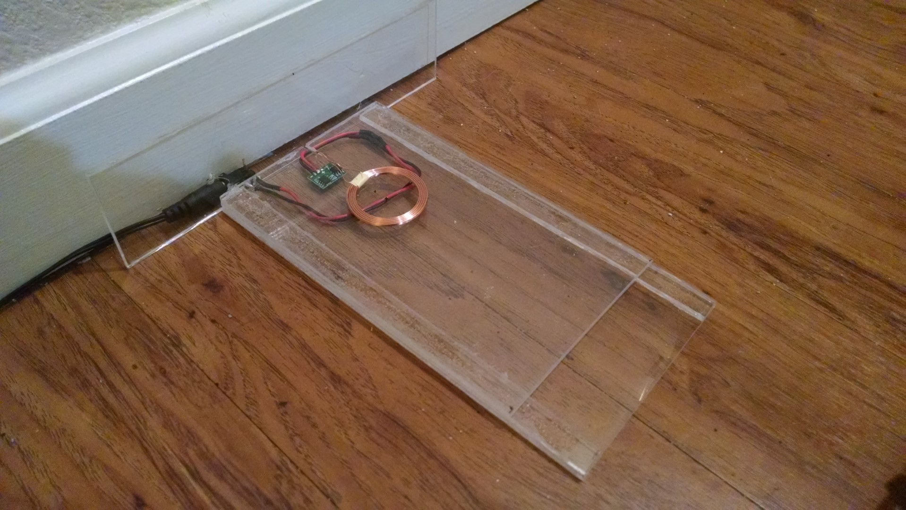
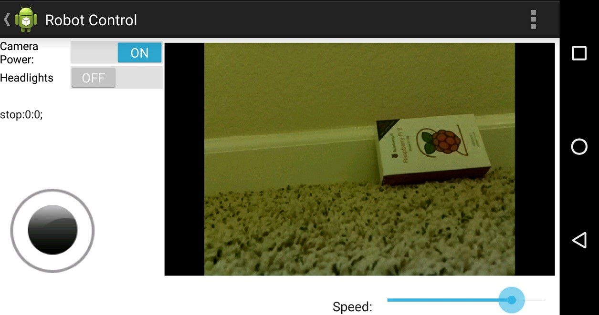

Internet Controlled Robot
|
Overview For this project, I made a small robot that is capable of being controlled through the internet via an android app or web browser.
The robot can provide a live POV video feed to the user who can drive the robot in real time. At one point I had IR sensors on it that allowed it to navigate on it's own, but I eventually replaced them with little LED headlights to allow you to drive in the dark.
The robot can be controlled through a website that I have hosted on another rasberry pi in the apartment, or alternatively, it can be driven using an android app that I developed.
This was my first experience writing an android app, so it's a little bit messy. I do think it's a way cooler experience to drive it with the app though.
I've also constructed a 'base' for the robot which uses induction coils to charge the robot's USB battery pack. It can sit on this base and charge while not in use which allows it to stay powered for long periods. Unfortunately, this feature didn't quite work out how I had hoped, but more on that below.
The robot uses a Rasberry Pi to receive control commands through wifi and also to power the attached camera.
This project was really just a smaller and simpler version of the 'Minotaur' robot I worked on for my senior project. I thought it'd be fun to create a more compact version that I could chase the cat around with.
Hardware For the chassis I used a robot chassis kit from sparkfun that included the motors and everything already. I was able to fit a lot of the electronics in the internal compartment where the motors sit. The inside of the robot consists of a PIC microcontroller, an H brige moror driver module (also from sparkfun), and the motors themselves. The Rasberry Pi and USB battery pack sit on the top deck, and the AA batter pack is attached to the back. The Rasberry pi does almost all of the real work on the robot handling the wifi connection, incoming control commands, and the camera feed. It communicates with the onboard PIC through UART to control all of the low level functions of the robot like driving the motors and the headlight circuit. There were 2 reasons for using the PIC instead of just using the GPIOs on the RPi. One is that I wanted to have speed control for the motors which required use of the PWM module on the PIC. The other reason was that I originally had IR proximity sensors on the front which output an analog voltage proportional to the distance measured. That required use of the PICs analog to digital converter. For power, the robot has 2 power supplies. One is an off the shelf USB battery pack that powers the RPi. The RPi has an onboard regulator that generates a 3.3V rail. This 3.3V rail powers the PIC, and other circuitry inside the robot. The second power supply is an external AA battery pack that powers the motors and LED headlights. The below image is a (very) rough notebook sketch of the schematic for the robot along with an image of the internals.
I thought it would be really useful to have a charging station like a Roomba where you could leave it on an charging while not in use. That way when I went away I could log into the robot, drive it around, and put it back on the charger without wasting energy. To acompish that, I created a charging base for the robot that used induction coils to charge the USB battery pack on the robot. It sounds pretty awesome in theory, but when I actually tested it, I found that if the coils weren't perfectly aligned, they wouldn't supply enough energy to even power the Rasberry Pi at idle. That meant eventually, the robot would run out of power just sitting on the base. It was extremely difficult to get it so that the coils were aligned well, so once the robot came off of the base, there was basically no way it was ever going to be driven back on. If I do it again, I'll probably buy different induction coils and also make a much better base, that is easier to drive onto. Software The onboard Rasberry Pi is running an arm version of Arch Linux. I liked Arch because it's extremely bare bones. There's basically nothing installed by default, so it won't be bogged down by things that I'm not using. I set up the Pi to connect to my home wifi upon boot, and to run a python application that will accept and execute commands from the user. The python program accepts commands from the user through an HTML5 'websocket'. This allows a client browser to talk directly to the application so that it doesn't have to go through http and all that. The websocket server is actually located on another Pi that I have at the apartment. This server then routes the command to the robot. The program will parse these commands received from the server, and take appropriate action. It can send a UART command to the PIC to handle motor driving commands and headlight control. It can also turn on and off the video stream. The video stream is done using the Rasberry Pi camera in conjunction with a program called mjpeg-streamer. This program takes images from the RPi camera and creates an http mjpg stream that the client app (website or andoid app) can connect to. The latency is pretty good at around a half a second. I tried a couple other things for video streaming and I found that this gave the best latency at an acceptable resolution (640x480). The code on the PIC was written in embedded C for the PIC16F1847 microcontroller. It's fairly simple as it's only job is to recieve packets from the RPi and either drive the motors using it's PWM module, or switch on/off the headlights using a GPIO. The website that I set up to test and drive the robot was really simple. Basically it would open up a websocket and you would use WASD to control the movement movement of the robot. There was also a little slider that would control the speed. Since I always have my phone, I wanted to create an android app to control the robot. I was eventually able to hack something together, but it's not super modular or well written to be honest. It works well enough though. Below is an image of what the app's control screen looks like. There's a window for viewing the live video stream from the robot, a joystick for movement control, a slider for speed control, and 2 toggle switches for headlight and camera control. 
Copy of Code
|

|
||||||||||||||
|
Other Pictures
|
|||||||||||||||